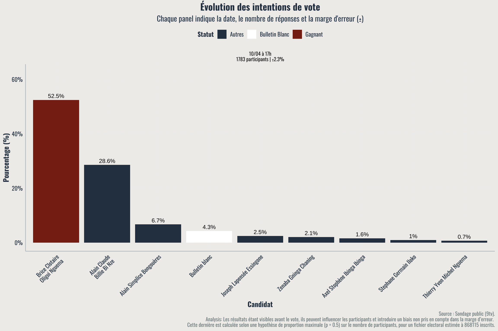
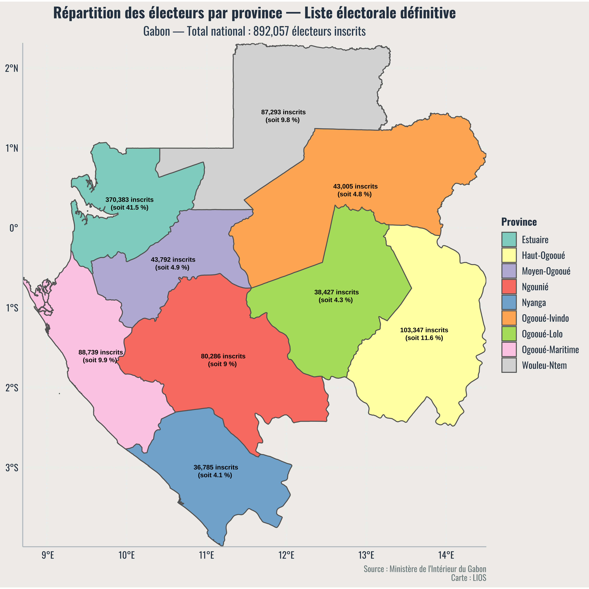
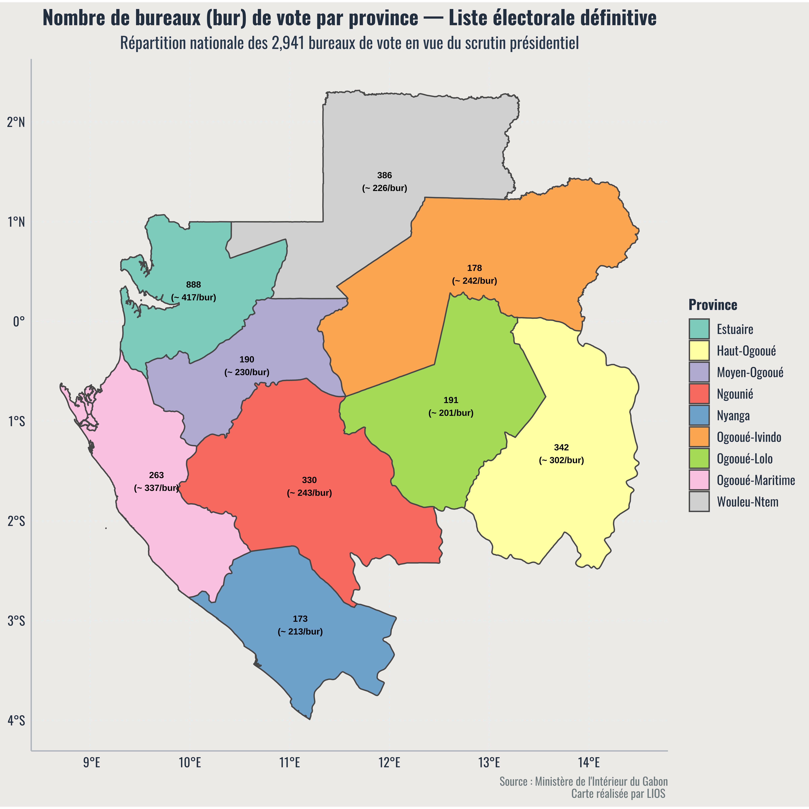

Introduction
Le Gabon se prépare pour ses élections présidentielles de 2025. Cet article présente une analyse des intentions de vote basée sur les derniers sondages disponibles.
Contexte politique
Le Gabon traverse une période de transition politique significative depuis la fin du régime Bongo, marqué par la prise de pouvoir du général Brice Clotaire Oligui Nguema en 2023 à la suite d’un coup d’État. Le Comité pour la transition et la restauration des institutions (CTRI) dirige actuellement le pays, avec la promesse d’organiser des élections libres et transparentes en 2025. Cette élection est perçue comme un tournant démocratique crucial dans l’histoire du pays, après plusieurs décennies de pouvoir héréditaire.
De nouveaux acteurs politiques émergent, tandis que d’anciennes figures tentent un retour. L’environnement politique reste polarisé, entre espoirs de renouveau et méfiance envers les institutions de transition.
Méthodologie
Les données analysées dans cet article proviennent d’un sondage en ligne ouvert, mené entre le 8 et le 10 avril 2024. Les participants étaient invités à exprimer leur intention de vote via une page dédiée sur le réseau social Facebook. Afin de maximiser la participation, le sondage a été relayé à plusieurs reprises sur différentes publications et groupes actifs.
Ce type de sondage repose sur une participation volontaire, ce qui implique plusieurs limites méthodologiques : • Biais d’auto-sélection : seuls les internautes intéressés et connectés sont représentés. • Manque de représentativité : les résultats ne peuvent pas être généralisés à l’ensemble de la population gabonaise. • Effet de visibilité : comme les résultats étaient visibles avant la clôture, ils ont pu influencer certains choix.
Pour pallier ces limites, une marge d’erreur théorique a été calculée pour chaque vague de réponse, en considérant une hypothèse de proportion maximale (p = 0.5) et une taille de fichier électoral estimée à 868 115 inscrits. Néanmoins, ces estimations restent indicatives et ne remplacent pas la rigueur d’un sondage probabiliste représentatif.
Résultats des sondages
üîç Commentaire sur les r√©sultats
Les résultats du dernier panel, arrêté au 10 avril à 17h, montrent une avance nette de Brice Clotaire Oligui Nguema, avec 52,5 % des intentions de vote, soit une majorité absolue si le scrutin avait lieu ce jour-là. Il est suivi par Alain Claude Billie Bi Nze (28,6%), qui se positionne comme principal challenger.
Les autres candidats restent pour l’instant en retrait, avec des scores inférieurs à 7 %, tandis que le vote blanc représente 4,3 %, signe d’un certain désengagement ou refus de l’offre politique actuelle.
Cette photographie de l’opinion illustre une dynamique polarisée autour de deux figures dominantes, dans un contexte où l’écart semble se creuser à l’approche du scrutin. Toutefois, la marge d’erreur estimée à ±2,3 % rappelle que de légères évolutions restent possibles, surtout si la participation réelle diffère du profil des votants en ligne.
Analyse par région
En l’absence de données de géolocalisation ou de variables territoriales, il n’est pas possible d’assigner avec certitude les intentions de vote à des régions spécifiques du Gabon. Néanmoins, la diffusion du sondage via Facebook, notamment dans des groupes actifs basés à Libreville, Port-Gentil, Franceville et Oyem, indique une forte participation en provenance des centres urbains.
Les zones rurales ou périphériques, souvent moins connectées, sont probablement sous-représentées. Cela pourrait expliquer certains déséquilibres dans les résultats, notamment en faveur de figures politiques médiatisées ou associées à la capitale.
Analyse démographique
Le sondage ne comportait pas de questions démographiques directes (âge, sexe, niveau d’éducation, zone géographique, etc.), ce qui limite la capacité à segmenter finement les résultats. Toutefois, l’analyse des profils Facebook des participants, des commentaires, ainsi que des groupes où le lien du sondage a été partagé, suggère une participation majoritairement jeune (18–35 ans).
Cette surreprésentation des jeunes électeurs est cohérente avec les usages numériques au Gabon, où les réseaux sociaux sont principalement utilisés par la jeunesse urbaine connectée. De plus, plusieurs indices laissent penser que la majorité des répondants sont politiquement engagés ou intéressés par les débats publics.


Facteurs d’influence
Les intentions de vote semblent influencées par plusieurs facteurs clés : • Visibilité médiatique des candidats : Brice Clotaire Oligui Nguema bénéficie d’une forte présence médiatique en tant que chef de la transition. • Réseaux sociaux : les partages, likes et commentaires jouent un rôle dans la formation des opinions. • Mémoire politique : les candidats associés à l’ancien régime font face à une défiance accrue chez une partie de la population. • Scepticisme sur la transition : certains électeurs hésitent entre soutenir le candidat de la transition ou manifester leur incertitude via un vote blanc.
Conclusion
Les données issues de ce sondage offrent un aperçu dynamique et en temps réel des intentions de vote à l’approche du scrutin. Bien qu’elles ne soient pas représentatives de l’ensemble de l’électorat, elles mettent en lumière certaines tendances clés et l’évolution rapide des préférences électorales.
À quelques jours de l’élection, et alors que la campagne officielle touche à sa fin, l’opinion publique demeure encore fluide. Les derniers rassemblements, débats télévisés, prises de parole publiques et mouvements sur les réseaux sociaux pourraient encore influencer une partie des électeurs indécis.
Ce sondage illustre également l’importance croissante des plateformes numériques dans la mobilisation et la formation de l’opinion, en particulier chez les jeunes. Le scrutin à venir s’annonce donc non seulement décisif pour l’avenir politique du Gabon, mais aussi révélateur des nouvelles dynamiques de participation citoyenne à l’ère numérique.
Références
[Références et sources de données]